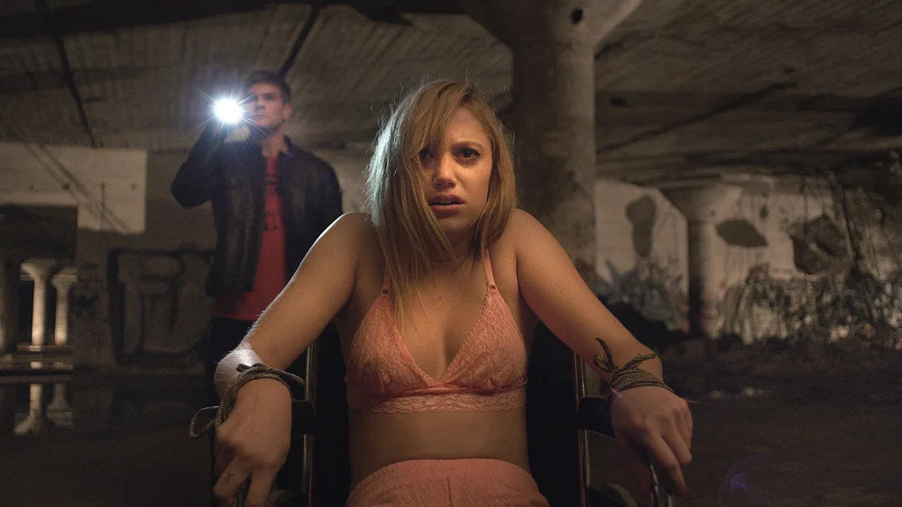
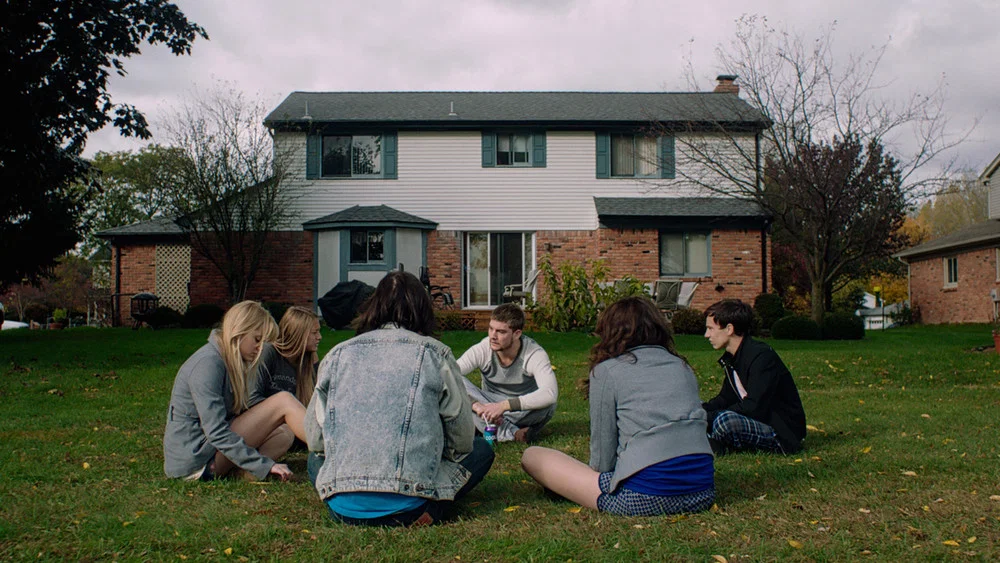
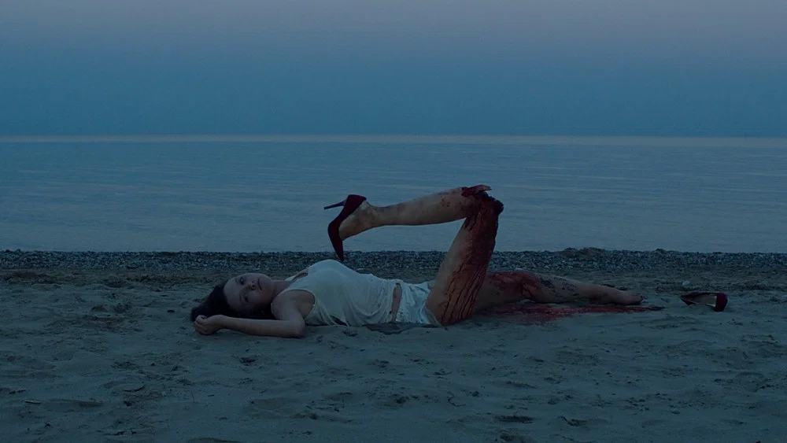

La regola è una sola e si spiega in trenta secondi: se ce l'hai addosso, ti segue. Cammina, non corre mai. Può assumere le sembianze di chiunque, di solito qualcuno che conosci, a volte qualcuno nudo in mezzo al prato. La vedi solo tu. Non si ferma, non dorme, non prende scorciatoie, e se ti raggiunge ti uccide. L'unico modo per liberartene è passarla a qualcun altro andandoci a letto, con la clausola scomoda che se quella persona muore la cosa torna indietro lungo la catena e ricomincia da te.

Detta così sembra il soggetto di uno di quei racconti che ci si raccontava da bambini. Ed è esattamente il punto: David Robert Mitchell ha costruito il film su una struttura da leggenda metropolitana, cioè su una paura che funziona proprio perché non ha una spiegazione. Non c'è un'origine, non c'è un rituale, non c'è un libro antico da tradurre. C'è solo una regola, e cento minuti esatti di conseguenze. Mitchell mette la macchina da presa nel posto in cui lo spettatore può vedere più cose di quante ne veda la protagonista. Panoramiche lente a 360 gradi in un cortile scolastico, campi larghi tenuti un paio di secondi oltre il necessario, profondità di campo generose. Il risultato è che il pubblico smette di guardare i volti e comincia a scandagliare il fondo dell'inquadratura, cercando la figura che avanza. Non serve nemmeno che ci sia: il film ci ha addestrati a cercarla, e la tensione se la produce da sola.

È merito anche della fotografia di Mike Gioulakis, che tratta i sobborghi di Detroit come un paesaggio distopico. Poi c'è il tempo, che è la cosa più discussa e più riuscita. It Follows è ambientato in un presente impossibile: televisori a tubo catodico che passano film di fantascienza in bianco e nero, automobili degli anni Settanta, telefoni fissi, e in mezzo un lettore e-reader a forma di conchiglia che non è mai esistito. Non è un errore, è un dispositivo: il film si stacca da qualsiasi anno per assomigliare al ricordo di un'adolescenza, che è precisamente il modo in cui funzionano le leggende.
La colonna sonora di Rich Vreeland, in arte Disasterpeace, porta una scrittura elettronica che non accompagna le scene: le aggredisce. Sono blocchi di synth che entrano a volume pieno, distorti, quasi fastidiosi, e che spesso partono prima che accada qualcosa. È una musica che non commenta la paura, la annuncia, e in alcuni passaggi arriva a coprire i dialoghi.

Al centro di tutto c'è Maika Monroe, che con Jay costruisce un personaggio credibile proprio perché non fa nulla di eroico. Non indaga, non si arma, non tiene discorsi: cerca solo di dormire in un posto sicuro e di capire a chi può dirlo. Intorno a lei c'è un gruppo di amici scritto con un affetto che nell'horror adolescenziale si vede poco. Paul, Yara, Kelly, Greg non esistono per morire in ordine, esistono per portarle una sedia in giardino e restare svegli a turno. Quella solidarietà stanca è la cosa più adulta del film.

Sul sottotesto si sono versati fiumi d'inchiostro, e in buona parte a sproposito. Sì, la trasmissione è sessuale, e sì, la lettura come metafora delle malattie a trasmissione sessuale è la prima che viene in mente. Ma il film è più interessante di così: la cosa non punisce il sesso, visto che il sesso è anche l'unica via di fuga disponibile. Quello che It Follows mette in scena è piuttosto il momento in cui l'adolescenza finisce, cioè quando ti accorgi che c'è qualcosa che avanza verso di te a passo d'uomo e che non si può negoziare. La mortalità.
L'ultimo atto della pellicola è onestamente il punto debole. Il piano per affrontare la creatura in piscina è volutamente ingenuo, e funziona come idea di scrittura, sono ragazzi, fanno un piano da ragazzi, ma sullo schermo diventa la sequenza più convenzionale di un film che fino a quel momento aveva rifiutato ogni convenzione. Anche il finale, con la sua ambiguità in campo lungo, è più furbo che necessario.

Ma è un difetto che si perdona subito, perché It Follows ha fatto la cosa più difficile: ha inventato un mostro nuovo. Non un remake, non un revival, non una variazione su Michael Myers. Una figura che cammina in linea retta e che, dodici anni dopo, continua a farci controllare il fondo dell'inquadratura.
— A. P.